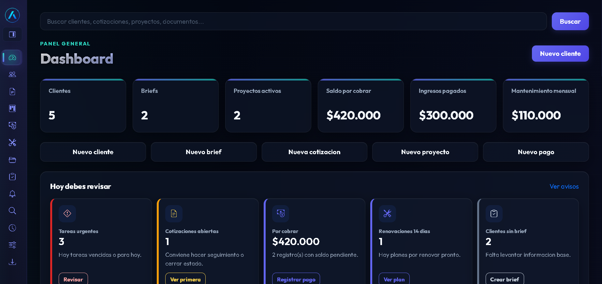
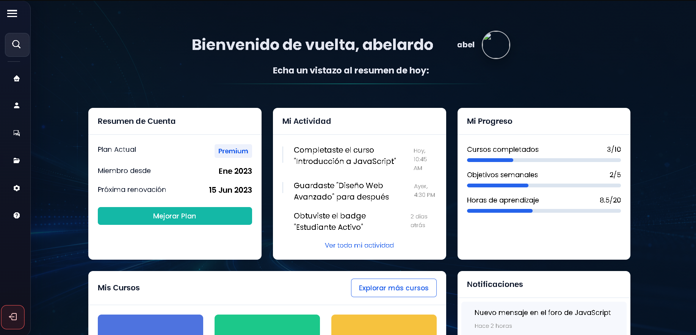
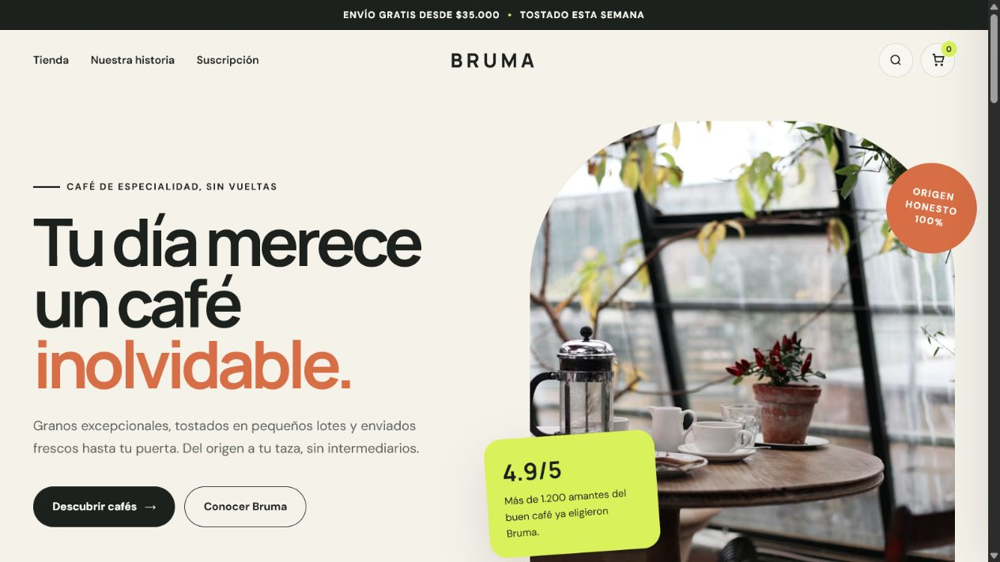
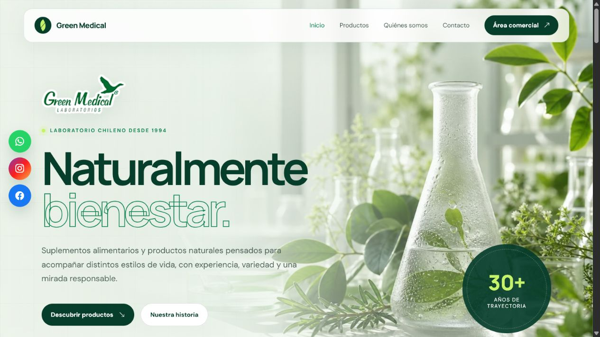
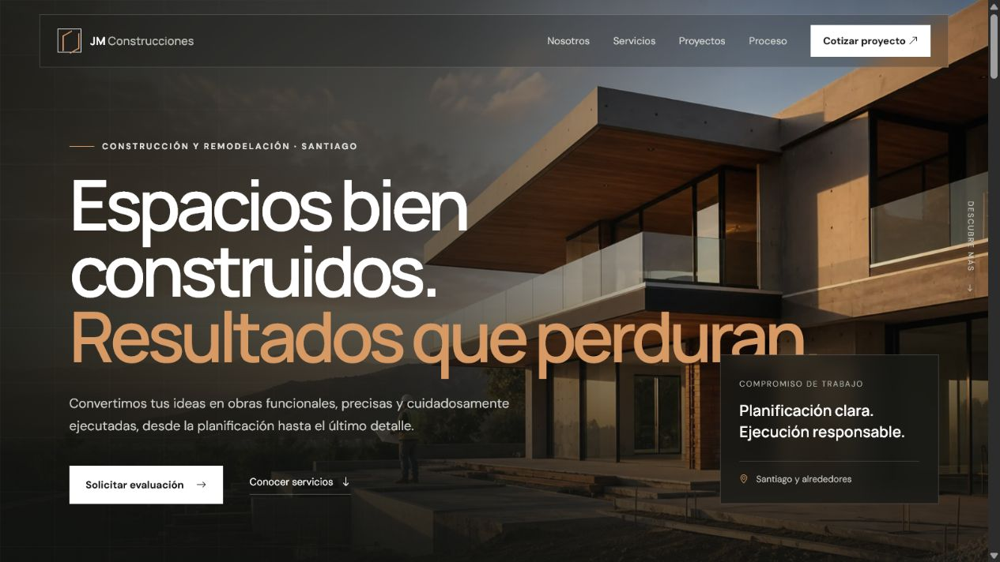
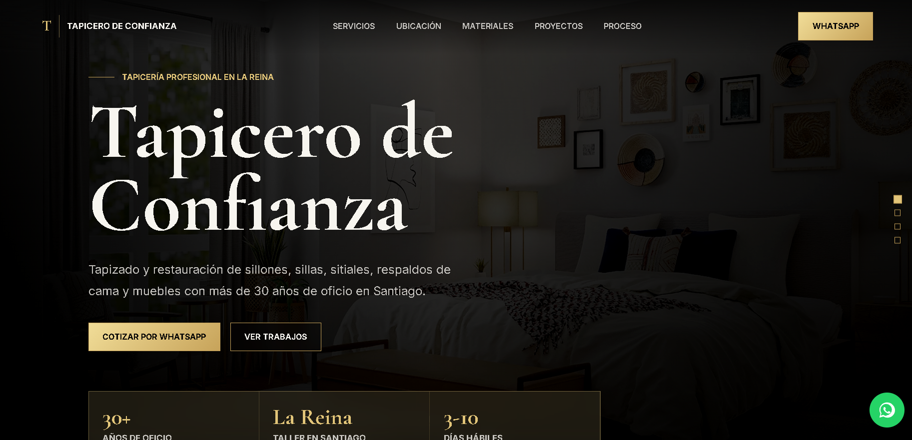

Proyecto destacadoWeb App / Fullstack / Gestion comercial
Web ventas
Panel administrable para gestionar clientes, briefs, cotizaciones, proyectos, pagos y mantenimiento mensual desde un dashboard operativo.
Mis proyectos
Una seleccion de repositorios reales publicados en GitHub, convertidos en una experiencia visual con filtros, movimiento y cards interactivas.

Proyecto destacadoWeb App / Fullstack / Gestion comercial
Panel administrable para gestionar clientes, briefs, cotizaciones, proyectos, pagos y mantenimiento mensual desde un dashboard operativo.
Web Apps / Fullstack
Sistema administrable para ordenar clientes, cotizaciones, proyectos, pagos, briefs y mantenimiento en una sola operacion.

Web Apps / Fullstack
Primer intento de construir una intranet completa: usuarios, foros, mensajes, archivos y configuracion en una app de mayor escala.

Landing Pages / UI Design
Presentacion comercial para cafe de especialidad con estilo editorial, carrito visual y enfoque de marca.

Landing Pages / UI Design
Experiencia de marca para laboratorio natural, con hero visual, catalogo y secciones de confianza.

Landing Pages / UI Design
Sitio corporativo para construccion y remodelacion, con fotografia protagonista y llamados comerciales.

Landing Pages
Proyecto para modernizar la presencia digital de un negocio de restauracion y fabricacion de muebles tapizados.